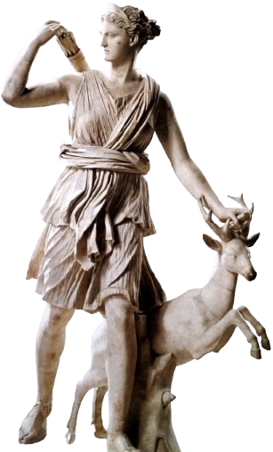
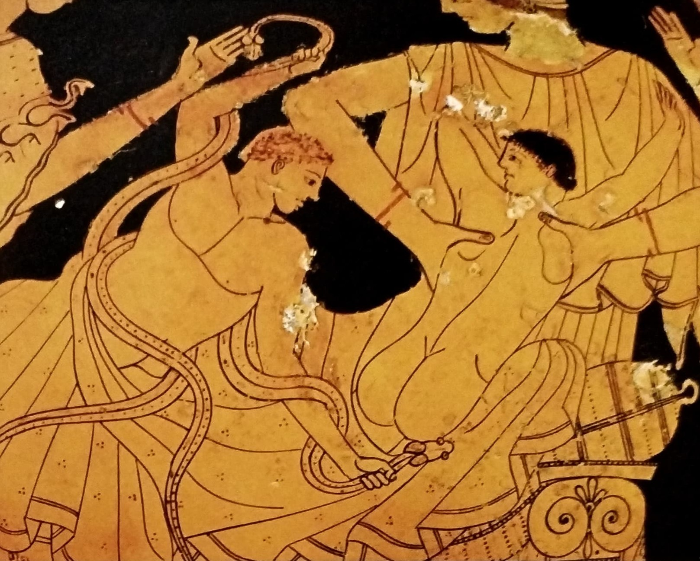
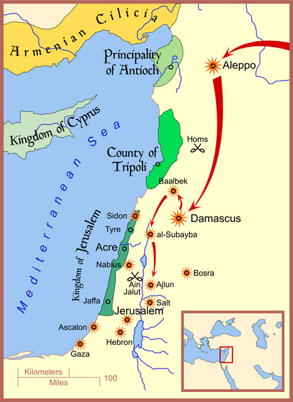
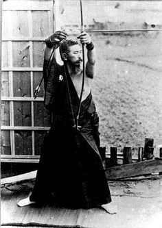
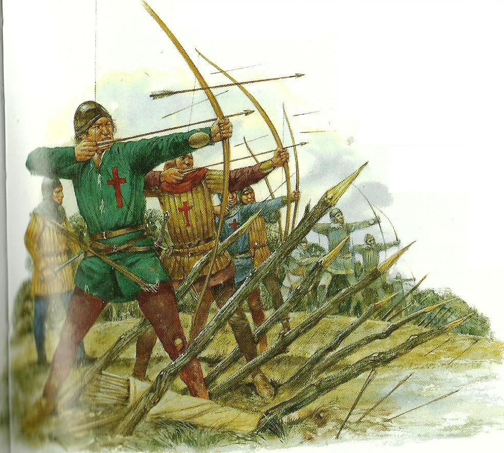

Arcul cu sageti este una dintre cele mai vechi arme cunoscute in istoria omenirii. Unele izvoare istorice dateaza originea arcului la aproximativ 25 de secole inaintea epocii moderne.
Cuprins
Prezentarea arcului
 Arcul este la origine o armă primitivă de aruncat săgeți, alcătuită
dintr-o vergea elastică ușor încovoiată și o coardă prinsă de
extremitățile vergii.
Arcul este la origine o armă primitivă de aruncat săgeți, alcătuită
dintr-o vergea elastică ușor încovoiată și o coardă prinsă de
extremitățile vergii.
Alături de primele bărci de tip canoe, care au fost, cel mai
probabil, construite în epoca mezolitică, arcul și de săgețile, sunt
mari invenții ale lui Homo sapiens. Arcul a fost folosit ca armă de
vânătoare sau de luptă încă din perioada 30.000–10.000 î.Hr. Astăzi
este folosit doar în competiții sportive de tragere la țintă.
Arcurile tradiționale sunt construite din lemn, corn sau tendoane de
animale. Arcurile cele mai apreciate sunt produse de înaltă
tehnologie, de exemplu au vergeaua compusă din mai multe straturi
diferite, iar construcția lor durează mai multe luni. Arcurile
moderne sunt perfecționate în mod continuu, ele fiind construite din
fibre speciale care asigură o elasticitate și rezistență mai mare la
încovoieri repetate.
Prezentarea sagetii
 Dovezile sugerează că oamenii au fost capabili să întreprindă o serie de pași pentru a face doar vârfurile săgeților, să nu mai vorbim de arborele de lemn și arcul. Arborele săgeții, precum și arcul propriu-zis, au fost inițial făcute din lemn suficient de flexibil pentru a se îndoi și a se curba cu presiune. Diferitele culturi au făcut arcuri în mod diferit și cu diverse materiale pe baza a ceea ce era disponibil. Unele arcuri japoneze vechi au fost la fel de lungi ca 8 picioare, iar unele au fost făcute din corn sau balena. Pătratele africane erau de obicei mici; Ecosimii au folosit arcuri compuse din lemn și oase cu sinew - un țesut fibros puternic din animalele folosite pentru a se uni cu bucăți. Un arc compozit este realizat printr-o combinație de materiale, permițând fiecare piesă - sau "membre" - să fie compusă din cel mai potrivit material pentru această funcție. Culorile asiatice folosesc adesea arcuri compuse din lemn, corn și sine, care stocau energie în tensiune. Acum, arcurile sunt în mare parte fabricate din lemn stratificat, fibră de sticlă, metal și fibră de carbon.
Dovezile sugerează că oamenii au fost capabili să întreprindă o serie de pași pentru a face doar vârfurile săgeților, să nu mai vorbim de arborele de lemn și arcul. Arborele săgeții, precum și arcul propriu-zis, au fost inițial făcute din lemn suficient de flexibil pentru a se îndoi și a se curba cu presiune. Diferitele culturi au făcut arcuri în mod diferit și cu diverse materiale pe baza a ceea ce era disponibil. Unele arcuri japoneze vechi au fost la fel de lungi ca 8 picioare, iar unele au fost făcute din corn sau balena. Pătratele africane erau de obicei mici; Ecosimii au folosit arcuri compuse din lemn și oase cu sinew - un țesut fibros puternic din animalele folosite pentru a se uni cu bucăți. Un arc compozit este realizat printr-o combinație de materiale, permițând fiecare piesă - sau "membre" - să fie compusă din cel mai potrivit material pentru această funcție. Culorile asiatice folosesc adesea arcuri compuse din lemn, corn și sine, care stocau energie în tensiune. Acum, arcurile sunt în mare parte fabricate din lemn stratificat, fibră de sticlă, metal și fibră de carbon.
O săgeată este alcătuită dintr-un arbore cu vârful de săgeată la vârf și vine în mai multe stiluri diferite. Inițial, lemnul era folosit cel mai frecvent pentru a modela arborele unei săgeți; este, de asemenea, cel mai ieftin material. Săgețile au fost făcute din coajă, os, piatră și metal. Capul de săgeată este de obicei atașat la arbore cu ciment, mufe sau ambele. Pene sunt folosite pentru a stabiliza săgeata în timpul zborului. Șirul arcului este adesea compus din mai multe materiale, deși variația materialelor folosite este vastă. Lobul englezesc din Evul Mediu avea în mod obișnuit o coardă din cânepă sau lenjerie, în timp ce loviturile turcești și arabe erau din mătase și mohair. Alte materiale care au fost utilizate includ rattan, bambus, fibre vegetale, piele de animale sau sinew.
Structura sagetii
Arborele se referă la corpul principal cilindric al săgeții. Toate celelalte părți ale săgeții sunt atașate de arbore.
Coca este capătul săgeții care primește coarda arcului. Nocurile pot veni într-o varietate de forme, despre care vom discuta mai târziu.
Vârful săgeții este capătul săgeții care este destinat să lovească ținta. Există o mare varietate de vârfuri de săgeți care servesc unui scop specific. Există vârfuri de săgeți late, cu lame pentru vânătoare, vârfuri ascuțite compacte pentru armura perforatoare, chiar și vârfuri de săgeți incendiare și șuieratoare.
Penele sunt aripioarele stabilizatoare de la un capăt al săgeții, opus vârfului săgeții. Din punct de vedere istoric, cel mai obișnuit material pentru fluturare au fost penele. Din nefericire, arborele de săgeți și penele nu supraviețuiesc în evidența arheologică, deoarece se biodegradează ușor. Singura parte a săgeții care supraviețuiește este vârful săgeții.
Dimensiuni
Lungimea săgeților a variat de-a lungul istoriei. Deși majoritatea săgeților au o lungime medie de aproximativ 28 până la 30 de inci. Săgețile recuperate de la Mary Rose conțineau mai multe arcuri lungi intacte, precum și mii de săgeți. Săgețile aveau toate aproximativ 30 de inci lungime.
Săgețile de zbor turcești au fost cele mai scurte. Săgețile au fost făcute cât mai mici și, prin urmare, cât mai ușoare posibil, deoarece obiectivul în zborul cu arcul este de a vedea cât de departe poate parcurge săgeata. Dispozitive speciale, cum ar fi un siper, pot fi folosite pentru a supratrage astfel de săgeți scurte. Supratratarea se referă la tragerea săgeții dincolo de arc, ceea ce de obicei nu este recomandat.
Clasificarea arcului
- Arcul simplu (primtiv)
- Arcul lung englezesc (longbow)
- Arcul asirian
- Arcul scitic
- Arcul maghiar
- Arcul mongol
- Arcul lung japonez (yumi)
 Se crede că primele arcuri au fost utilizate în perioada mezolitică, acum aproximativ 10.000-15.000 de ani. Cele mai vechi exemple descoperite, cum ar fi arcul Holmegaard din Danemarca, demonstrează că oamenii din acea perioadă foloseau deja tehnici avansate pentru realizarea armelor.
Se crede că primele arcuri au fost utilizate în perioada mezolitică, acum aproximativ 10.000-15.000 de ani. Cele mai vechi exemple descoperite, cum ar fi arcul Holmegaard din Danemarca, demonstrează că oamenii din acea perioadă foloseau deja tehnici avansate pentru realizarea armelor.
Un arc primitiv este, în esență, o simplă bucată de lemn curbată, legată la capete cu o coardă din fibră vegetală, tendon de animal sau intestine. Săgețile erau realizate din lemn ușor, prevăzute cu vârfuri ascuțite din piatră, os sau metal, pe măsură ce tehnologia a evoluat.
Arcul primitiv a fost inițial folosit ca unealtă de vânătoare, oferind oamenilor un avantaj semnificativ în capturarea animalelor de la distanță. Odată cu dezvoltarea societăților umane, arcul a devenit o armă de război esențială, utilizată de egipteni, greci, romani și multe alte civilizații antice.
Chiar dacă armele moderne au înlocuit arcul ca instrument principal de luptă și vânătoare, acesta continuă să fie folosit în sport, recreație și tradiții culturale. Tirul cu arcul rămâne o disciplină olimpică, iar în multe comunități indigene, tehnicile tradiționale de fabricare și utilizare a arcului sunt încă păstrate și transmise din generație în generație.
 Arcul lung englezesc este un tip de arc medieval înalt, cu o lungime de circa 2 m utilizat de englezi și galezi ca armă de vânătoare sau de război. Arcul lung a fost utilizat cu eficiență împotriva francezilor în timpul Războiului de 100 de Ani, mai ales în bătăliile din faza sa incipientă, de la Crécy (1346) și Poitiers (1356), dar și în celebra bătălie de la Azincourt (1415). După aceea, arcurile lungi au fost mai puțin eficiente, arcașii suferind mari pierderi în bătălia de la Verneuil (1424), și fiind învinși în bătălia de la Patay (1429) când au fost atacați înainte de a reuși să ocupe poziții defensive.
Arcul lung englezesc este un tip de arc medieval înalt, cu o lungime de circa 2 m utilizat de englezi și galezi ca armă de vânătoare sau de război. Arcul lung a fost utilizat cu eficiență împotriva francezilor în timpul Războiului de 100 de Ani, mai ales în bătăliile din faza sa incipientă, de la Crécy (1346) și Poitiers (1356), dar și în celebra bătălie de la Azincourt (1415). După aceea, arcurile lungi au fost mai puțin eficiente, arcașii suferind mari pierderi în bătălia de la Verneuil (1424), și fiind învinși în bătălia de la Patay (1429) când au fost atacați înainte de a reuși să ocupe poziții defensive.
Cel mai vechi arc lung cunoscut în Anglia, găsit la Ashcott Heath, Somerset, datează din 2665 î.Hr., dar nu există arcuri provenind din perioada începută atunci și până în vremea când arma a devenit răspândită pe scară largă (1250–1450). Probabil aceasta se întâmplă deoarece arcurile se rupeau, se slăbeau și erau înlocuite, nefiind păstrate de-a lungul mai multor generații. Există însă peste 130 de arcuri datând din perioada Renașterii. Peste 3.500 de săgeți și 137 de arcuri lungi au fost recuperate de pe Mary Rose, o corabie a lui Henric al VIII-lea scufundată la Portsmouth în 1545.
 Arcul asirian, utilizat de către asirieni în perioada antică, era un arc reflex, compus dintr-o combinație de lemn, coarne și tendoane, conceput pentru a oferi o putere de tragere semnificativă. Această construcție permitea arcașilor să tragă cu precizie și forță, fiind esențială în tacticile militare ale asirienilor.
Arcul asirian, utilizat de către asirieni în perioada antică, era un arc reflex, compus dintr-o combinație de lemn, coarne și tendoane, conceput pentru a oferi o putere de tragere semnificativă. Această construcție permitea arcașilor să tragă cu precizie și forță, fiind esențială în tacticile militare ale asirienilor.
În cadrul armatei asiriene, arcașii erau sprijiniți de infanteriști și care de luptă, formând unități specializate care acopereau diverse aspecte ale luptei. Această organizare complexă a contribuit la eficiența și succesul militar al Imperiului Asirian.
Astăzi, arcul asirian este apreciat de către pasionații de arcuri tradiționale pentru designul său distinctiv și performanțele sale remarcabile. Reconstituirile moderne ale acestui tip de arc sunt realizate cu materiale și tehnici contemporane, păstrând însă esența și funcționalitatea originală.
 Arcul scitic a fost o armă esențială pentru sciți, un popor nomad din stepele eurasiatice, activ între secolele VIII î.Hr. și II î.Hr. Acest arc compozit, de dimensiuni reduse, era ideal pentru tragerea de pe cal, permițând arcașilor să mențină o mobilitate ridicată în timpul luptelor. Construcția sa implica utilizarea unor materiale precum lemnul, coarnele de animale și tendoane, toate unite cu ajutorul unui clei obținut din oase. Capetele arcului erau întărite cu tendoane, iar coarda era realizată din intestine de bovină. Această combinație de materiale conferea arcului o putere și o elasticitate deosebite, permițând săgeților să atingă distanțe semnificative.
Arcul scitic a fost o armă esențială pentru sciți, un popor nomad din stepele eurasiatice, activ între secolele VIII î.Hr. și II î.Hr. Acest arc compozit, de dimensiuni reduse, era ideal pentru tragerea de pe cal, permițând arcașilor să mențină o mobilitate ridicată în timpul luptelor. Construcția sa implica utilizarea unor materiale precum lemnul, coarnele de animale și tendoane, toate unite cu ajutorul unui clei obținut din oase. Capetele arcului erau întărite cu tendoane, iar coarda era realizată din intestine de bovină. Această combinație de materiale conferea arcului o putere și o elasticitate deosebite, permițând săgeților să atingă distanțe semnificative.
Vârfurile de săgeți scitice erau adesea trilobate, cunoscute sub numele de "punctul scitic", și erau concepute pentru a penetra eficient armurile inamicilor. Acestea erau fabricate din bronz și aveau o formă distinctivă, cu trei lame care se extind din corpul principal. Unele dintre vârfurile de săgeți aveau ghimpe proeminente, în timp ce altele nu. Trilobul era de obicei realizat din bronz, în timp ce axul folosit pentru a livra vârful de săgeată era făcut din stuf sau lemn și avea o lungime de aproximativ 76 cm. Aceste vârfuri erau extrem de eficiente în penetrarea armurii și aveau adesea proprietăți otrăvitoare, sporind astfel periculozitatea lor pe câmpul de luptă.
Abilitățile de tragere ale arcașilor sciti erau remarcabile. Aceștia erau antrenați să tragă cu precizie în timpul galopului, executând manevre complexe și surprinzătoare, precum "lovitura parthică", în care se retrăgeau aparent din fața inamicului, doar pentru a se întoarce în șa și a trage în urmă, surprinzând adversarii. Această mobilitate și versatilitate le permitea să execute manevre complexe, surprinzând inamicii și obținând victorii decisive.
 Arcul maghiar, utilizat în secolele IX-XI, este o armă remarcabilă, specifică războinicilor maghiari din perioada migrației lor în Bazinul Panonic. Acest tip de arc face parte din familia arcurilor asiatice, caracterizate prin capetele rigide sau semirigide atașate la vârfurile membrelor arcului, de care este prinsă coarda. Printre aceste arcuri se numără arcul hunic, arcul mongol și arcul turcesc.
Arcul maghiar, utilizat în secolele IX-XI, este o armă remarcabilă, specifică războinicilor maghiari din perioada migrației lor în Bazinul Panonic. Acest tip de arc face parte din familia arcurilor asiatice, caracterizate prin capetele rigide sau semirigide atașate la vârfurile membrelor arcului, de care este prinsă coarda. Printre aceste arcuri se numără arcul hunic, arcul mongol și arcul turcesc.
Arcul maghiar este un arc compozit și reflex, simetric, conceput inițial pentru a fi folosit de călăreți. Ulterior, a fost adaptat pentru a facilita utilizarea de către pedestrași. Fabricat din materiale precum lemnul, coarnele de animale și tendoane, arcul oferea o combinație de flexibilitate și rezistență, permițând o rază de acțiune de până la 200 de metri.
Această armă a jucat un rol esențial în tacticile militare ale maghiarilor, contribuind la succesul lor în numeroase campanii și incursiuni în Europa. Arcul maghiar a fost folosit cu succes în bătălii precum cea de la Lechfeld (955), unde maghiarii au învins o armată germană condusă de Otto I, și în bătălia de la Arcadiopolis (970), unde au învins o armată bizantină.
 Arcul mongol a fost o armă esențială în arsenalul războinicilor mongoli, contribuind semnificativ la expansiunea rapidă a Imperiului Mongol în secolele XIII și XIV. Acest arc compozit, de dimensiuni relativ mici, era ideal pentru tragerea de pe cal, permițând arcașilor să mențină o mobilitate ridicată în timpul luptelor. Construcția sa implica utilizarea unor materiale precum lemnul de tisă, bambusul și coarnele de capră ibex siberiană, toate unite cu ajutorul unui clei obținut din oase. Capetele arcului erau întărite cu tendoane, iar coarda era realizată din intestine de bovină. Această combinație de materiale conferea arcului o putere și o elasticitate deosebite, permițând săgeților să atingă distanțe de până la 320 de metri.
Arcul mongol a fost o armă esențială în arsenalul războinicilor mongoli, contribuind semnificativ la expansiunea rapidă a Imperiului Mongol în secolele XIII și XIV. Acest arc compozit, de dimensiuni relativ mici, era ideal pentru tragerea de pe cal, permițând arcașilor să mențină o mobilitate ridicată în timpul luptelor. Construcția sa implica utilizarea unor materiale precum lemnul de tisă, bambusul și coarnele de capră ibex siberiană, toate unite cu ajutorul unui clei obținut din oase. Capetele arcului erau întărite cu tendoane, iar coarda era realizată din intestine de bovină. Această combinație de materiale conferea arcului o putere și o elasticitate deosebite, permițând săgeților să atingă distanțe de până la 320 de metri.
Tehnicile de tragere ale arcașilor mongoli erau remarcabile. Încă din copilărie, aceștia erau antrenați să încordeze arcul și să tragă cu precizie, chiar și în timpul galopului. Această abilitate le permitea să execute manevre complexe, precum "lovitura parthică", în care se retrăgeau aparent din fața inamicului, doar pentru a se întoarce în șa și a trage în urmă, surprinzând adversarii. Mobilitatea și versatilitatea arcului mongol, alături de măiestria arcașilor, au fost factori cheie în succesul campaniilor militare mongole, permițându-le să cucerească teritorii vaste și să stabilească cel mai mare imperiu terestru contiguu din istorie.
 Arcul japonez denumit “yumi”, are o forma asimetrica si este surprinzator de lung. In timp ce in Europa, Asia si America cel mai lung arc este aproximativ de marimea arcasului (arcul lung englezesc), arcul japonez depaseste cu mult aceasta marime. De regula lungimea unui arc lung japonez “daikyu” este de 2,30 m dar exista si se folosesc si variante mai scurte “hankyu”. Yumi e construit in mod traditional din fasii laminate bambus, in numar de 5, 7 sau 9 bucati, initial fiind construit dintr-o singura bucata. Se considera ca folosirea fasiilor de bambus laminate (lipite) a aparut ca urmare a progreselor tehnologice si a faptului ca bambusul era cu mult mai usor de procurat si folosit.
Arcul japonez denumit “yumi”, are o forma asimetrica si este surprinzator de lung. In timp ce in Europa, Asia si America cel mai lung arc este aproximativ de marimea arcasului (arcul lung englezesc), arcul japonez depaseste cu mult aceasta marime. De regula lungimea unui arc lung japonez “daikyu” este de 2,30 m dar exista si se folosesc si variante mai scurte “hankyu”. Yumi e construit in mod traditional din fasii laminate bambus, in numar de 5, 7 sau 9 bucati, initial fiind construit dintr-o singura bucata. Se considera ca folosirea fasiilor de bambus laminate (lipite) a aparut ca urmare a progreselor tehnologice si a faptului ca bambusul era cu mult mai usor de procurat si folosit.
Un alt aspect specific arcului japonez este asimetria lui, fapt nemaintalnit in alte culturi. Manerul arcului este pozitionat cam la o treime de partea de jos a arcului (si doua treimi fata de partea de sus). Multe supozitii s-au facut, posibile explicatii fiind ca aceasta forma a arcului a fost impusa de pe vremea cand se tragea cu arcul din pozitia ingenunchiat, sau pentru a usura folosirea arcului de catre calaretii arcasi. De altfel si astazi exista practica kyudo calare (yabusame),. O privire atenta insa ne descopera amanunte de o profunzime neasteptata a spiritului nipon.
Clasificarea sagetii
- De os
- De piatra
- De metal
- Broadhead
- Bodkin
Un alt material antic pentru vârfurile de săgeți sunt oasele sau coarnele animalelor. În Marile Câmpii ale Americii de Nord, unde rocile și pietrele potrivite erau puține, coarnele și oasele animalelor sunt ideale pentru vârfuri de săgeți.
Istoricul roman Ammianus Marcellinus (născut în jurul anului 330, murit în jurul anilor 391 – 400) scrie că hunii foloseau săgeți cu vârfuri de os: „pentru că luptă de la distanță cu rachete cu os ascuțit, în loc de vârfurile lor obișnuite, unite de arbori cu o pricepere minunată”. Hunii și-au păstrat priceperea în metalurgie și au produs, de asemenea , o varietate de vârfuri de săgeți metalice care apar în evidența arheologică.
Cele mai vechi vârfuri de săgeți făcute vreodată! În afară de simpla ascuțire a arborelui în sine, acesta este cel mai simplu și mai primitiv vârf de săgeată. Pune o piatră ascuțită la capătul axului săgeții. Axul săgeții a fost de obicei ușor despicat și a fost introdus vârful de săgeată din silex sau piatră. Sforul poate fi, de asemenea, legat în jurul vârfului săgeții și a arborelui pentru un plus de siguranță și rezistență. Acest tip de vârf de săgeată a fost folosit de către oamenii preistorici pentru vânătoare și luptă.
Următoarea mare descoperire tehnologică pentru umanitate după descoperirea și îmblânzirea focului a fost metalul. Folosirea metalelor pentru unelte ar scoate rasa umană din epoca de piatră. De la descoperirea și utilizarea celor mai vechi metale, am făcut vârfuri de săgeți din ele. Primul metal folosit a fost cuprul. Este relativ abundent și ușor de format. Poate fi topit din minereu la o temperatură relativ scăzută. Următoarea este o cronologie referitoare la istoria vârfurilor de săgeți metalice.
Vârfuri de săgeată din epoca cuprului, c. 3500 – 2000 î.Hr
După cum am menționat, cele mai vechi vârfuri de săgeți metalice au fost făcute din cupru. Aceste vârfuri de săgeată se caracterizează prin forma lor plată și prin tăbăluge pentru a se potrivi în arborele săgeții. Sunt realizate din cupru ciocănit. Fabricat pentru prima dată în Anatolia (Turcia actuală) și s-a răspândit în Egipt și Orientul Mijlociu.
Vârfuri de săgeată din epoca bronzului, c. 2200 – 1200 î.Hr
Săgețile simple din cupru au făcut loc celor mai mari și mai complexe din bronz. Bronzul este un aliaj de cupru și staniu, care este considerabil mai puternic decât cuprul singur. Aceste vârfuri de săgeți au fost folosite de foarte mult timp.
Vârfuri de săgeată din epoca fierului, c. 1200 – 690 î.Hr
Fierul este abundent, dar are un punct de topire de 1.538 °C (2.800 °F), care a fost de neatins pentru majoritatea cuptoarelor și fierarilor până în al doilea mileniu î.Hr. Când Fierul a fost folosit în cele din urmă, a oferit un material excepțional de puternic pentru vârfurile de săgeți.
Vârfurile de săgeți clasificate ca vârfuri late au fost folosite din cele mai vechi timpuri pentru vânătoare și război. Ele sunt încă folosite astăzi de majoritatea vânătorilor cu arc. După cum sugerează și numele lor, au aripi largi, cu lame, care sunt proiectate să taie și să pătrundă. Majoritatea capetelor late sunt fabricate din oțel și au 2 până la 4 muchii largi de tăiere care facilitează sângerarea victimei.
Există capete late cu lame fixe, care sunt dintr-o singură bucată, și capete late mecanice. Capetele late mecanice, la contact, se vor deschide mecanic cu lamele balansate pentru a oferi o suprafață de tăiere mai mare. Aceste vârfuri de săgeți sunt de obicei mai aerodinamice decât versiunile cu lamă fixă, deoarece lamele sunt înfipte în ansamblul săgeții. Capetele late mecanice sacrifică o parte din energie cinetică și penetrări pe măsură ce este cheltuită cu lamele. Aceste vârfuri de săgeată pot provoca multe daune și nu sunt recomandate pentru tragerea la țintă.
Un vârf de săgeată cu formă piramidală triunghiulară sau pătrată. Fabricate de obicei din oțel sau fier neîntărit, posibilul scop inițial al punctelor Bodkin a fost de a furniza un vârf de săgeată mai ieftin, mai ușor de fabricat în comparație cu vârfurile late. Aceste vârfuri de săgeți au, de asemenea, o secțiune transversală foarte mică, astfel încât să extindă zborul săgeții. Au fost eficiente și când vine vorba de penetrare.
Multe sute de mii dintre aceste vârfuri de săgeți au fost falsificate și folosite în Războiul de o sută de ani, între Anglia și Franța, în secolele al XIV-lea și al XV-lea d.Hr. Săgețile englezilor cu arc lung au trebuit să se ridice împotriva armurii de placă a cavalerilor francezi. Cele mai multe dovezi sugerează că armura groasă a cavalerilor francezi ar respinge efectiv săgețile, inclusiv pe cele cu vârfuri bodkin.
Arcul și săgeata in mitologie
În mitologia clasică, arcul, considerat o invenţie a lui Crotos , este atri¬butul mai multor zeităţi. Poate fi întîlnit în numeroase mărturii iconografice ca parte din echipamentul Artemisei, zeiţa vînătorii, şi al corespondentei sale latine, Diana. Arc poartă adesea Orion, Chiron şi centaurii, precum şi mulţi eroi, printre care mai cu seamă Heracle. După dispariţia eroului, arcul său i-a fost încredinţat lui Filoctet. Dar, întrucît acesta nu a putut să urmeze armata greacă la Troia, oprindu-se la Lemnos din cauza unei răni îngrozi¬toare, rezultatele asediului Troiei au fost compromise. De fapt, potrivit profeţiei, numai folosirea în luptă a armelor lui Heracle asigura victoria aheilor. Ca atare, aducerea lui Filoctet la Troia va repre¬zenta o condiţie indispensabilă pentru reuşita încercării.
Arcasul poate trage mai multe sageti intr-un inamic redutabil sau de mari proportii, simbolizand o munca depusa in etape, cu perseverenta, sau haituirea si secarea fortelor pentru a-i aplica lovitura finala.
Sageata trasa nu se identifica cu arcasul asa cum sabia (sau alta arma) este cateodata suprapusa total luptatorului. Sageata este un vector, un purtator al intentiei arcasului la distanta, si poate fi repetata sau poate fi indreptata o alta sageata identica spre un alt inamic.
De aceea arcul este potrivit vanatorii, unde prada este cautata, identificata, studiata si urmarita atent, ochita cu sageata si anihilata. Anihilarea Egourilor, a defectelor psihologice pe care le purtam inauntrul nostru, urmeaza aceleasi etape, iar daca zeii sunt cei care-l utilizeaza, inseamna ca o anumita parte a fiintei sustine efortul initiatului in demersul sau.
Iar in mitologia greaca cei doi protectori ai arcului cu sageti ne sugereaza din plin aceasta ipoteza, zeii frati Apollo si Artemis, doi dintre cei doisprezece zei Olimpieni, zei ai tineretii/inceputului, ai vindecarii/sanatatii (spirituale) si ai vigorii/energiei, nascuti pe ape, pe insula plutitoare Delos.
Artemis/Diana - zeita vanatorii

Artemis: „Zeitele, grăit-a Zeus, să-mi facă asemenea copii şi atunci furiile geloasei Hera mă vor tulbura mai puțin. Primește, fiică, tot ce-ți dorești și ce vrei. Treizeci de cetăți îți voi dărui, nu una singură, treizeci de oraşe ce vor cinsti o singură zeiță, pe tine, şi vor fi cetățile lui Artemis" (Calimah, Imn lui Artemis, 25-30).
Veşnic tânără şi activă, Artemis este egala băr- batilor si versiunea feminină a fratelui ei geamăn, Apolo. Trăiește înconjurată de şai- zeci de oceanide şi douăzeci de nimfe, la fel de frumoase unele ca şi celelalte.
Fiică a lui Zeus si Leto, Artemis este urmă- rită chiar de la naştere de gelozia Herei, soția legitimă a stăpânului din Olimp şi, născându-se prima, ajută la adu- cerea pe lume a lui Apolo. Legătu- rile dintre frate şi soră sunt, în cazul lor, foarte strânse.
Artemis este mare şi impunătoare (Imn homeric lui Apolo Pithicul, 271),
regină cu chipul frumos (Calimah, Imn lui Artemis, 204) și bucle aurii (Euripide, Hipolit, 80). Mândră de trupul său, se îngrijește și îşi păstrează ferm virginitatea.
Artemis cea cu săgeți de aur
Venind din Delos, Artemis ar fi vânat prima dată în Atica (Pausanias, 1, 19, 6). Este înarmată cu un arc și săgeți făurite de Hefaistos şi de ciclopi. Zeul Pan i-a dăruit câi- nii, „mai repezi ca vântul" și capabili să doboare chiar şi leii (Calimah, Imn lui Artemis, 90-95). Zeița sălăş- luiește în munți și păduri, unde vânează cerbi şi căprioare (Iliada, XXI, 485), iar uneori lei şi pantere (Pausanias, V, 19, 5).
Tânăra ursuză
Artemis este o luptătoare: participă împreună cu Apolo la uciderea șarpelui Piton, la pedepsirea gigantului Titios și la masacrarea copiilor Nio- bei, regina care îi insultase mama. Vai de cel ce o supără! Este fecioara neatinsă și de neatins" (Sofocle, Electra, I 239) şi se arată nemiloasă faţă de cei ce vor să i se impună: gigantul Otos îşi găseşte moartea ca urmare a unuia dintre vicleșugurile ei (Odiseea, XI, 305); Orion este înțepat.de un scorpion trimis de ea (Palaiphatos, Istorii incredibile, 51, I, 4, 3); Acteon, care o surprinde îmbăindu-se goală în izvorul Parthenios, este prefăcut în cerb (Diodor din Sicilia, IV, 81, 3-5); Buphagos e străpuns de săgeți pe Muntele Pholoe (Pausanias, VIII, 27, 17).
Zeița apără pudoarea, se ridică împotriva vio- lenței necontrolate, a desfrâului, şi pedepseşte iubirile ilicite: violarea nimfelor Opis şi Chromion este răzbunată (Pausanias. VIII, 47, 6); tiranul Tar- tarus este ucis fiindcă profită de puterea sa pentru a le poseda, înainte de măritis, pe tinerele din cetatea sa (Antoninus Liberalis, XIII). Le pedepseşte pe fecioarele care cedează iubi- rii: o transformă în ursoaică pe Calisto, după ce aceasta s-a lăsat sedusă de Zeus
(Hesiod, Fragmente, XCIX) şi cere sacrificarea preotesei sale, Comoetho, şi a amantului aces- teia, Melanipos (Pausanias, VII, 19, 20). Întreaga sa solicitudine se îndreaptă spre tinerele fete, cele care n-au prins gustul daru- rilor frivolei Afrodita: acestea sunt preotesele ei, cele care o sărbătoresc, dansează în fața templului ei şi se adună în crân- guri. Artemis nu se opune căsă- toriei lor, dar la nuntă ele depun în fața altarului ei parurile vir- ginale, şuvițe din păr, păpuși, jucării, şi părăsesc domeniul zeiţei. Artemis nu acordă atenţie nimicurilor. Când este vorba despre evenimente grave însă, intervine, se erijează în protec- toare a femeilor ce nasc şi a nou-născuților (Calimah, Imn lui Artemis, 20-25).
 Diana, zeiţa vânătorii
La Capua şi Roma este cunoscută sub numele Diana, zeiţă exi- gentă, dat fiind că păstrarea templului ei din Aricia nu poate fi asigurată decât prin uciderea preotului în exercițiu (Ovidiu, Cronici, III, 275). Se spune că în acest sanctuar al zeitei s-a ascuns
Hipolit, fiul lui Tezeu, după moartea și învierea sa. Zeita domneşte în păduri și, la idele lui august, la serbările în cinstea ei, recompensează câinii și încheie un armistițiu cu animalele sălbatice (Statius, Culegere de poeme, III, I, 55).
Cultul
La Roma, Dianei îi sunt închinate mai multe temple. Cel din comunitatea Patricius are un caracter aparte: este interzis bărbaților, de când unul dintre ei ar fi agresat o femeie chiar în sanctuar, iar câinii zeiţei l-ar fi sfâşiat. Cel mai important templu al Dianei a fost construit de Servius Tullius (578-534 î.Hr.) pe Colina Aventin; la serbările de aici participă în special femei şi sclavi.
Asimilarea Dianei cu Artemis a fost completă atunci când Augustus i-a conferit zeitei un loc alături de fratele ei, Apolo. Ea a devenit astfel Diana Victrix, Diana Victorioasa, fiind celebrată prin intermediul odei lui Horaţiu, destinată celei mai mari sărbători religioase pe care imperiul o orga- nizează în cinstea ei. Aici, Diana simbolizează Luna, iar Apolo, Soarele - cei doi aştri ce guvernează procreerea, naşterea şi moartea. Dar cei doi frați sunt considerati în primul rând protectorii cetății imperiale şi garanții păcii pe care aceasta a impus-o lumii.
Artemis: „Zeitele, grăit-a Zeus, să-mi facă asemenea copii şi atunci furiile geloasei Hera mă vor tulbura mai puțin. Primește, fiică, tot ce-ți dorești și ce vrei. Treizeci de cetăți îți voi dărui, nu una singură, treizeci de oraşe ce vor cinsti o singură zeiță, pe tine, şi vor fi cetățile lui Artemis" (Calimah, Imn lui Artemis, 25-30).
Diana, zeiţa vânătorii
La Capua şi Roma este cunoscută sub numele Diana, zeiţă exi- gentă, dat fiind că păstrarea templului ei din Aricia nu poate fi asigurată decât prin uciderea preotului în exercițiu (Ovidiu, Cronici, III, 275). Se spune că în acest sanctuar al zeitei s-a ascuns
Hipolit, fiul lui Tezeu, după moartea și învierea sa. Zeita domneşte în păduri și, la idele lui august, la serbările în cinstea ei, recompensează câinii și încheie un armistițiu cu animalele sălbatice (Statius, Culegere de poeme, III, I, 55).
Cultul
La Roma, Dianei îi sunt închinate mai multe temple. Cel din comunitatea Patricius are un caracter aparte: este interzis bărbaților, de când unul dintre ei ar fi agresat o femeie chiar în sanctuar, iar câinii zeiţei l-ar fi sfâşiat. Cel mai important templu al Dianei a fost construit de Servius Tullius (578-534 î.Hr.) pe Colina Aventin; la serbările de aici participă în special femei şi sclavi.
Asimilarea Dianei cu Artemis a fost completă atunci când Augustus i-a conferit zeitei un loc alături de fratele ei, Apolo. Ea a devenit astfel Diana Victrix, Diana Victorioasa, fiind celebrată prin intermediul odei lui Horaţiu, destinată celei mai mari sărbători religioase pe care imperiul o orga- nizează în cinstea ei. Aici, Diana simbolizează Luna, iar Apolo, Soarele - cei doi aştri ce guvernează procreerea, naşterea şi moartea. Dar cei doi frați sunt considerati în primul rând protectorii cetății imperiale şi garanții păcii pe care aceasta a impus-o lumii.
Artemis: „Zeitele, grăit-a Zeus, să-mi facă asemenea copii şi atunci furiile geloasei Hera mă vor tulbura mai puțin. Primește, fiică, tot ce-ți dorești și ce vrei. Treizeci de cetăți îți voi dărui, nu una singură, treizeci de oraşe ce vor cinsti o singură zeiță, pe tine, şi vor fi cetățile lui Artemis" (Calimah, Imn lui Artemis, 25-30).
Heracles/Hercule - forta

Urmărit de gelozia Herei, Heracles duce inițial o viață marcată de suferințe supraomenești și de fapte extraordinare care îi aduc în final, grație lui Zeus, nemurirea.
Heracles, sau Hercule, este fiul lui Zeus și al Alcmenei, soția lui Amfitrion. Pentru a însela virtutea nestirbită a Alcme- nei, stăpânul Olimpului a fost nevoit să ia înfățișarea soțu- lui ei și, pentru a-i asigura copilului forța uriașă menită să-i aducă gloria, Zeus triplează durata nopții de dragoste (Dio- dor din Sicilia, IV, 9, 2-3).
Gelozia Herei
Zeus îşi pune multe speranțe în această progenitură a sa. În ziua în care s-a născut i-a înştiinţat pe toți zeii de veni- rea pe lume a unui copil ce va fi rege. Dar Hera, mereu răz- bunătoare, întârzie naşterea lui Heracles şi, în locul lui, vede lumina zilei Euristeu, un vår lipsit de vlagă și de istețime. Respectându-şi făgăduiala, Zeus îl face rege; Heracles va fi doar un luptător în serviciul său (Diodor din Sicilia, IV, 9, 2-3). Heracles face încă din leagăn dovada forței cu care a fost înzestrat, sugrumând şerpii trimişi de geloasa Hera (Pindar, Nemeicele, I, 38). Numit inițial Alcide (,,cel Puternic"), va deveni Heracles (,,Gloria Herei") în urma încercărilor la care l-a supus soția lui Zeus (Diodor din Sicilia, IV, 9, 2).
Educația lui Heracles este asigurată de Linos, muzicianul, care îl învață literele şi cântul. Dar, elev indisciplinat, îi dă mult de furcă profesorului şi într-o zi, când acesta vrea să-l pedepsească, înșfacă un taburet și-l loveşte cu el atât de tare, încât îl ucide. Adus în fața justiției, este achitat fiindcă intenționase doar să se apere. Amfitrion se teme de furiile fiului său adoptiv; de aceea, îl trimite la țară să aibă grijă de turme. Un văcar scit, Teutaros, îl învață să tragă cu arcul. Tânărul-minune
La optsprezece ani, ucide leul din Citheron, care decima turmele din regiune. Cincizeci de zile îl pândește și, în fie- care seară a acestei îndelungi așteptări, la revenirea sa la palat, regele Thespios - care dorea nepoți de la acest erou - îi strecoară în pat pe una dintre cele cincizeci de fiice ale sale. Heracles are astfel cincizeci de fii, care vor coloniza Sicilia.
—
Îi întâlnește apoi pe trimișii regelui Erginos din Orhomene, care vin să ceară tributul impus Tebei. Heracles le taie nasul şi urechile, le înşiră pe ață și le spune trimişilor să ducă acest tribut stăpânului lor. Urmează apoi un război pe care Heracles îl câştigă și Teba primește acum un tribut dublu faţă de cel pe care îl plătise. Drept mulțumire, regele i-o dă în căsătorie pe fiica sa, Megara.
Mariajul nu este însă o reușită. Hera, mereu geloasă, îi pro- voacă lui Heracles o criză de nebunie: eroul îşi ucide copiii şi îl ameninţă chiar pe Amfitrion, care ar fi murit dacă nu ar fi intervenit Atena. Hercales trenuie să plătească pentru faptele sale: nu mai poate trăi alături de Megara, pe care o părăsește, și intră în serviciulvărului său, Euristeu.
Cele douăsprezece munci
Euristeu îi impune douăsprezece munci pe care trebuie să le ducă la bun sfârşit în cei doisprezece ani în care îl va sluji. Heracles sugrumă leul din Nemeea şi îşi face o armură din pielea sa. Taie apoi capetele hidrei din Lerna. Îi aduce lui Euristeu uriasul mistret din Erimant viu. Urmăreşte timp de un an căprioara zeiței Artemis pe Muntele Cerineia şi o prinde vie. Doboară cu săgeți numeroasele păsări din smâr- curile de lângă Stimfalos, care distrugeau culturile și uci- deau chiar oameni. Curăță într-o singură zi grajdurile regelui Augias, deturnând albiile a două râuri, Alfeu şi Peneu. Capturează viu taurul din Creta, care aruncă flăcări pe nas. Îl ucide pe Diomede, care dădea cailor săi să mănânce carne de om. Obține cingătoarea pe care Ares i-o dăduse amazoanei Hipolita. Pleacă spre miazănoapte și aduce de acolo vacile lui Gerione ajutat de barca de aur a lui Helios şi luptând cu numeroși duşmani, printre care și Nereu, regele din Pilos. Il aduce din Infern pe Cerber, câi- nele care păzeste intrarea în tărâmul lui Hades.
Apolo, zeul artelor. Zeul cu arc de argint
 Tânăr, frumos, inteligent, cumpătat, strălucitor, pre- zicător, poet şi muzician, Apolo reuneşte toate calitățile unui zeu măreţ, admirat şi respectat. Întru- chipează civilizația.
Tânăr, frumos, inteligent, cumpătat, strălucitor, pre- zicător, poet şi muzician, Apolo reuneşte toate calitățile unui zeu măreţ, admirat şi respectat. Întru- chipează civilizația.
Romanii îl numesc adesea Phoebus, Strălucitorul, şi este confundat cu Soarele. Caracterul său luminos, scânteietor, este întregit de o înfățișare formidabilă. Este supranumit cel mai puternic dintre zei".
Delos
Zeus are o aventură cu Leto şi aceasta rămâne însărcinată. Geloasă, Hera o urmărește pretutindeni pentru a o împiedica să-și aducă pe lume copiii. Doar o mică insuliță neroditoare și izolată, Asteria, acceptă s-o primească și Leto poate în sfârşit să nască, întâi pe Artemis și apoi pe Apolo. Fiindcă zeul luminii a venit pe lume pe pământul ei, insula este acoperită imediat de aur, devine prosperă (Imn homeric lui Apolo, 135), se prinde de fundul mării elene şi devine Delos, strălucitoarea. Lebedele sacre îi dau ocol de șapte ori, căci suntem în a șaptea zi a lunii, și apoi duc copilul dincolo de țara vântului de miazănoapte, la hiper-boreeni (Calimah, Imn către Delos, 41-54).
Delfi
După ce rămâne un an la hiperboreeni, Apolo pleacă la Delfi. Aici trăieşte un balaur, Piton, care păzeşte oracolul lui Themis, zeița legilor, dar care să dedă la tot soiul de nelegiuiri în vecinătate, ucigând oameni și vite, tulburând izvoarele şi distrugând pământurile. Apolo îl doboară cu săgețile sale și scapă țara de tirania lui. Apoi fondează Jocurile Pithice, sfințește sanctuarul și adoptă trepiedul ca unul dintre simbolurile sale; de acum, Pithia își va rosti prezicerile aşezată pe trepied (Imn homeric lui Apolo, 127).
Batalii celebre de tir cu arcul
Bătălia de la Posada (1330)
 Bătălia a fost menționată în mai multe cronici maghiare, poloneze și germane, prima relatare fiind cea din Cronica Pictată de la Viena (cca. 1360).
Bătălia a fost menționată în mai multe cronici maghiare, poloneze și germane, prima relatare fiind cea din Cronica Pictată de la Viena (cca. 1360).
În toate izvoarele nu este pomenit niciodată cuvântul „posadă”, ce desemna inițial un loc greu accesibil și apărat de elemente naturale sau artificiale. Denumirea de „Bătălia de la Posada” a fost introdusă și încetățenită în istoriografia românească de către Nicolae Iorga, la începutul secolului XX. Istoricul considera că bătălia din 1330 s-ar fi desfășurat „în cazanul de la Posada, pe drumul Câmpulungului”.
În 1324 Basarab I, domnul Țării Românești, se afla sub suzeranitatea lui Carol Robert de Anjou, regele Ungariei. Un an mai târziu, domnitorul român cucerește Severinul, ceea ce a dus la răcirea relațiilor cu Regatul Ungar. Mai mult decât atât, din 1327 Basarab refuză să mai plătească tributul. Aceste fapte l-au determinat pe regele ungar, la sfatul lui Dionisie (mai târziu ban de Severin), să întreprindă o expediție de recucerire a teritoriului pierdut și de pedepsire a vasalului său.
În luna septembrie a anului 1330, Carol Robert de Anjou, cu o puternică armată, pleacă din Timișoara să-l pedepsească pe fostul său vasal. Ocupă Banatul de Severin și înaintează prin Oltenia, pustiită în prealabil de către Basarab, spre Curtea de Argeș. Datorită acestei strategii de apărare, în rândurile armatei invadatoare se instalează foametea încă de la intrarea în Țara Românească. Pe drum, Carol Robert primește o solie din partea domnitorului român (ilustrată și într-una dintre cele trei miniaturi legate de acest subiect ale Cronicii pictate de la Viena), care îi aduce o propunere de pace. Oferta de pace făcută de Basarab I este refuzată de către rege, deși i se promitea generos o despăgubire a 7.000 de mărci de argint, cedarea cetății Severinului și trimiterea unui fiu la curtea ungară ca garanție, "numai vă întoarceți în pace și vă feriți de primejdii, că de veți veni mai încoace, nu veți scăpa de dânsele".
Carol Robert răspunde cu aroganță că Basarab este păstorul tuturor oilor sale și că îl va scoate de barbă din vizuina lui. În cele din urmă, armata maghiară ajunge la Curtea de Argeș, pe care o găsesc pustie și o incendiază.
Unele relatări ungurești dar și cronica polonă a lui Jan Długosz povestesc despre un armistițiu încheiat între cele două părți beligerante, cu condiția ca românii să conducă armata invadatoare către Ungaria pe drumul cel mai scurt. Ghizii români puși la dispoziția regelui de către Basarab i-ar fi condus apoi pe unguri într-un defileu unde acesta le pregătise o capcană. Odată ajunși în acea vale îngustă și prăpăstioasă, ungurii sunt atacați și zdrobiți, un rol important îl joacă arcașii care lansează o ploaie de săgeți asupra celor prinși în defileu. Au existat două atacuri, conform documentelor. Primul, dat în susul văii, a oprit înaintarea intrușilor, iar al doilea a însemnat distrugerea lor (9-12 nov 1330).
„Basarab a venit pe o cale cu toată oastea sa, și calea sucită și de amândouă părțile cu râpe foarte înalte, era închisă împrejur, și unde calea zisă era mai largă, acolo valahii în mai multe locuri o întăriseră cu șanțuri săpate împrejur. Iar regele și toți ai săi la așa ceva întru adevăr nu s-au gândit. Mulțimea nenumărată a valahilor, sus pe râpi alergând din toate părțile, arunca săgeți asupra oastei ungurești care era în fundul căii de drum, care însă nu ar fi trebuit numit drum, ci mai curând un fel de corabie strâmtă, unde, din pricina înghesuielii, cei mai sprinteni cai și ostași cădeau în luptă, pentru că din pricina urcușului prăpăstios din cale nu se puteau sui contra valahilor, pe nici una din râpele de pe amândouă laturile drumului; nici nu puteau merge înainte, nici nu aveau loc de fugă, fiind șanțurile săpate acolo, ci ostașii regelui erau cu totul prinși, ca niște pești în vârșă sau în mreajă.” (Cronica pictată de la Viena)
Carol Robert de Anjou a scăpat cu greu, schimbând hainele sale cu ale unui oștean pentru a nu fi recunoscut. Printre victime, alături de numeroși nobili, s-au numărat și Toma, voievodul Ardealului, Andrei de Alba, purtătorul sigiliului regal, precum și preotul personal al regelui. O parte a supraviețuitorilor au fost luați în robie, însuși regele recunoscând, doi ani mai târziu, că în urma bătăliei „s-au tras nu puține robii, cazne și primejdii pentru neamul unguresc”.
„Au căzut tineri și bătrâni, principi și nobili, fără nici o deosebire. Căci această tristă întâmplare a ținut mult, de la ziua a șasea a săptămânii, până la ziua a doua a săptămânii viitoare, în cari zile ostașii aleși așa se izbeau unii pe alții precum în leagăn se leagănă și se scutură pruncii, sau ca niște trestii clătinate de vânt. S-a făcut aici mai cumplită ucidere, căci a căzut mulțimea de ostași, principi și nobili, și numărul lor nu se poate socoti.”(Cronica pictată de la Viena)
Prin această victorie, Basarab I a reușit să consolideze independența ținutului, să o întărească din punct de vedere statal, pentru ca mai apoi să-i lărgească hotarele. Relațiile cu Regatul Ungariei s-au îmbunătățit abia după moartea lui Carol Robert (1342) și suirea pe tron a fiului său Ludovic I, în special după 1345. În 1354, Nicolae Alexandru a recunoscut suzeranitatea regelui maghiar.
Bătălia de la Crécy (1346)

 Purtată în nordul Franţei, în apropiere de Crécy, bătălia este una dintre cele mai impresionante bătălii, nu prin victoria englezilor asupra unei armate net superioare ci prin tehnicile de luptă folosite în timpul ei.
Purtată în nordul Franţei, în apropiere de Crécy, bătălia este una dintre cele mai impresionante bătălii, nu prin victoria englezilor asupra unei armate net superioare ci prin tehnicile de luptă folosite în timpul ei.
În fruntea celor două armate au fost Eduard al III-lea, Anglia şi Filip al VI-lea al Franţei.
În timpul bătăliei, englezii, au hotărât să adopte o poziţie defensivă avatajoasă, folosind eficient forţa militară foarte bine organizată precum şi arma a cărei însemnătate nu poate fi contestată:arcul lungit.
Se spune că disperarea (poate din cauza faptului că bătălia se poarta pe un teritoriu total necunoscut) i-a împins pe englezii să folosească tacticile “neortodoxe”experimentate pe vecinii lor scoţieni:în loc să ducă o confruntare directă cu francezii, englezii au preferat să descalece adoptând o poziţie defensivă, aliind arcaşii în apropierea taberi adverse.
În momentul confruntării, francezii au fost puşi la pământ sub ploaia de de săgeţi. Regele Filip şi o mare parte a aristocraţiei franceze au fost anihilaţi, iar regele Eduard a devenit un erou.
Victoria a avut drept urmare menţinerea entuziasmului englezilor faţă de război, precauţia francezilor în atacuri şi asediul portului Calais în 1347.
Combinaţia de arme şi tehnici militare superioare au făcut ca această bătălie să fie considerată sfârşitul cavalerismul clasic, demonstrând importanţa conceptului militar. este de asemenea una dintre primele bătălii dintre puterile europene in care s-a folosit tunul. Englezii mai încercaseră efectele tunului asupra scoţienilor în 1327.
Bătălia de la Agincourt (1415)


Henric a traversat Canalul Mânecii cu 11.000 de oameni și a asediat Harfleur, în Normandia. După cinci săptămâni, orașul s-a predat, dar Henric și-a pierdut jumătate din oameni din cauza bolilor și a pierderilor din luptă. El a decis să mărșăluiască armata sa spre nord-est, spre Calais, unde se va întâlni cu flota engleză și se va întoarce în Anglia. La Agincourt, însă, o vastă armată franceză de 20.000 de oameni i-a ieșit în cale, depășind cu mult numărul arcașilor, cavalerilor și oamenilor de arme englezi epuizați.
Câmpul de luptă se întindea pe o distanță de 1.000 de metri de teren deschis între două păduri, ceea ce a împiedicat manevrele pe scară largă și a fost astfel în avantajul lui Henric. La ora 11 a.m., pe 25 octombrie, a început bătălia. Englezii au rămas pe poziții, în timp ce cavalerii francezi, îngreunați de armurile lor grele, au început să avanseze lent pe câmpul de luptă noroios. Francezii au fost întâmpinați cu o puternică lovitură din partea arcașilor englezi, care mânuiau arcuri lungi inovatoare cu o rază de acțiune de 250 de metri. Cavalerii francezi au încercat să copleșească pozițiile englezilor, dar arcașii erau protejați de o linie de țăruși ascuțiți. Pe măsură ce tot mai mulți cavaleri francezi își făceau loc pe câmpul de luptă aglomerat, mobilitatea lor a scăzut și mai mult, iar unii nu aveau nici măcar spațiul necesar pentru a ridica armele și a da o lovitură. În acest moment, Henric le-a ordonat arcașilor săi slab echipați să se năpustească în față cu săbii și topoare, iar englezii i-au masacrat pe francezi.
Aproape 6.000 de francezi și-au pierdut viața în timpul Bătăliei de la Agincourt, în timp ce Henric al V-lea a pierdut puțin peste 400. Henric a obținut una dintre cele mai mari victorii din istoria militară. După alte cuceriri în Franța, Henric a fost recunoscut în 1420 ca moștenitor al tronului francez și regent al Franței. Era la apogeul puterilor sale, dar a murit doar doi ani mai târziu din cauza febrei, în apropiere de Paris.
Bătălia de la Ain Jalut (1260)
Bătălia de la Ain Jalut reprezintă un moment esențial în istorie, în care Sultanatul mameluc al Egiptului a oprit expansiunea spre vest a Imperiului Mongol , arătând rezistența și priceperea militară a forțelor mameluce. Această bătălie faimoasă de tir cu arcul, purtată în 1260, evidențiază rolul critic al arcașilor mameluci în apărarea împotriva unei formidabile invazii mongole.
Situația geopolitică:
În secolul al XIII-lea, Imperiul Mongol, sub comanda lui Hulagu Khan, a căutat să-și extindă stăpânirea în Orientul Mijlociu, reprezentând o amenințare semnificativă pentru lumea musulmană. Sultanatul mameluc, condus de sultanul Qutuz, a fost principalul bastion împotriva expansiunii mongole, mobilizându-și forțele pentru a înfrunta armata mongolă invadatoare din apropierea orașului Ain Jalut din Israelul actual.
Caracteristicile luptei:
La 3 septembrie 1260, forțele mameluce, numărând în jur de 20.000 până la 30.000 de soldați, inclusiv arcași cu cai pricepuți, s-au ciocnit cu armata mongolă, care se lăuda cu un număr similar. Pe măsură ce bătălia se desfășura, arcașii mameluci, renumiți pentru agilitatea și priceperea lor, au lansat un baraj necruțător de săgeți asupra rândurilor mongole.
Arcașii cai mameluci au folosit tactici de lovire și fugă și manevrabilitate rapidă pentru a hărțui forțele mongole, perturbându-le formațiunile și semănând confuzie în rândurile lor. Focul precis și coordonat al arcașilor mameluci a provocat pierderi grele cavaleriei și infanteriei mongole, împiedicându-le înaintarea și tocindu-le impulsul.
În ciuda rezistenței acerbe din partea mongolilor, forțele mameluce și-au menținut pozițiile defensive și au respins atacurile mongole succesive. Strălucirea strategică și hotărârea fermă a mamelucilor, împreună cu acuratețea letală a arcașilor lor cai, au dus în cele din urmă la înfrângerea armatei mongole.
Concluzie:
Bătălia de la Ain Jalut este o dovadă a rezistenței și vitejii sultanatului mameluc, care a zădărnicit cu succes invazia mongolă și a păstrat independența lumii musulmane. Triumful arcașilor mameluci a subliniat importanța critică a tirului cu arcul în războiul medieval, arătând eficacitatea acestuia în a respinge chiar și pe cei mai formidabili adversari.
Bătălia de la Nagashino (1575)

Bătălia de la Nagashino, purtată în 1575, reprezintă un conflict de referință în istoria Japoniei, prezentând impactul transformator al armelor de foc alături de tacticile tradiționale de tir cu arcul. Această bătălie celebră simbolizează ciocnirea dintre tehnologiile militare vechi și noi și are o semnificație profundă în analele războiului japonez .
Situația geopolitică:
La sfârșitul secolului al XVI-lea, Japonia a fost implicată într-o perioadă de conflict intens cunoscută sub numele de perioada Sengoku, caracterizată de război feudal și lupta pentru supremație între liderii războinici rivali. Bătălia de la Nagashino a apărut ca o confruntare critică între puternicul clan Takeda, condus de Takeda Katsuyori, și forțele combinate ale lui Oda Nobunaga și Tokugawa Ieyasu.
Caracteristicile luptei:
La 28 iunie 1575, armata Takeda, renumită pentru cavaleria sa pricepută și tacticile tradiționale de tir cu arcul, s-a confruntat cu forțele superioare numeric Oda-Tokugawa la Castelul Nagashino din provincia Mikawa. Cavaleria Takeda, înarmată cu arcuri și sulițe, a căutat să-și folosească atacurile rapide cu tirul cu arcul cu un efect devastator împotriva inamicilor lor.
Cu toate acestea, forțele Oda-Tokugawa, sub conducerea lui Oda Nobunaga și Tokugawa Ieyasu, au introdus o tactică revoluționară prin combinarea tragerii tradiționale cu arcul cu armele de foc. Ei au construit paliere de lemn fortificate, cunoscute sub numele de „teppōzumi”, în spatele cărora erau staționați mușchetari alături de arcași.
Pe măsură ce bătălia s-a desfășurat, cavaleria Takeda a lansat încărcături repetate împotriva apărării Oda-Tokugawa, doar pentru a fi întâmpinată cu o grădinară de focuri de armă și săgeți. Puterea de foc devastatoare a forțelor Oda-Tokugawa a provocat pierderi grele cavaleriei Takeda, perturbându-le formațiunile și scăpându-le moralul.
În ciuda eforturilor curajoase ale războinicilor Takeda, bătălia a culminat în cele din urmă cu o victorie decisivă pentru alianța Oda-Tokugawa. Combinația inovatoare de tir cu arcul și arme de foc s-a dovedit esențială în respingerea atacului Takeda și în asigurarea victoriei pentru Oda Nobunaga și Tokugawa Ieyasu.
Concluzie:
Bătălia de la Nagashino a marcat un punct de cotitură în războiul japonez, demonstrând eficiența armelor de foc alături de tacticile tradiționale de tir cu arcul. Victoria forțelor Oda-Tokugawa a anunțat ascensiunea lui Oda Nobunaga și Tokugawa Ieyasu ca figuri dominante în unificarea Japoniei și eventuala stabilire a shogunatului Tokugawa.
Arcasul

Arcașii au jucat un rol esențial în istoria militară a numeroaselor civilizații, influențând tacticile de luptă și dezvoltarea tehnologică a armelor de-a lungul secolelor.
Rolul tirului cu arcul in istorie:
Tirul cu arcul a fost mult timp salutat ca un schimbător de joc pe câmpul de luptă, deținând o precizie și o putere de neegalat, care adesea au înclinat balanța victoriei. În analele istoriei, arcașii au jucat un rol esențial în modelarea rezultatelor războaielor, tirajul lor priceput remodelând peisajele și destinele deopotrivă.
Semnificația tirului cu arcul nu constă doar în capacitatea sa de a arunca săgeți peste rândurile inamice de la distanță, ci și în versatilitatea și valoarea sa strategică. Arcașii au fost dislocați în diferite formațiuni, de la linii de luptă până la poziții fortificate, permițând comandanților să dicteze fluxul luptei cu lovituri de precizie și suprimarea focului.
Eficacitatea tirului cu arcul în război a rezultat din mai mulți factori cheie. În primul rând, raza de acțiune și letalitatea arcurilor le-au permis arcașilor să angajeze forțele inamice de la distanță, provocând pierderi și semănând haos înainte ca armata adversă să se poată apropia pentru luptă corp la corp. Acest lucru le-a oferit comandanților un avantaj crucial în a dicta ritmul angajamentelor și a ocupa pozițiile strategice.
Mai mult decât atât, tirul cu arcul necesita antrenament riguros și disciplină, cultivând un cadru de trăgători pricepuți capabili să livreze volei devastatoare cu o acuratețe remarcabilă. Competența arcașilor a fost perfecționată de-a lungul anilor de practică, asigurându-se că aceștia pot dezlănțui baraje de săgeți cu o eficiență mortală chiar și în mijlocul haosului de luptă.
Origini și Evoluție:
Utilizarea arcului datează din preistorie, fiind prezentă în diverse culturi antice. În Grecia antică, arcașii erau considerați o componentă valoroasă a armatei, fiind adesea asociați cu simboluri de putere și precizie. Romanii au integrat arcașii în forțele lor armate, învățând și adaptând tehnici de la popoarele cucerite, precum cele din Orientul Mijlociu și Asia Centrală. De asemenea, în timpul Evului Mediu, arcașii englezi au fost renumiți pentru utilizarea arcului lung, având un impact semnificativ în bătălii celebre precum Agincourt.
Tehnici și Tactică:
Arcașii au dezvoltat tehnici specifice în funcție de cultura și perioada istorică. De exemplu, în bătăliile medievale, arcașii erau adesea plasați pe flancuri sau în spatele infanteriei grele, lansând săgeți pentru a slăbi linia inamică înainte de angajamentul direct. Analiza scheletelor arcașilor medievali a oferit informații valoroase despre tehnicile de tragere și condițiile fizice ale acestora, evidențiind adaptările anatomice și posibilele leziuni specifice acestei activități.
Pe lângă rolul lor militar, arcașii au avut o semnificație culturală deosebită. În mitologia și literatura multor culturi, arcașii sunt portretizați ca eroi sau figuri legendare, simbolizând virtuți precum curajul și precizia. De asemenea, în anumite regiuni, tradițiile legate de tirul cu arcul au fost păstrate și transmise prin generații, reflectând o parte importantă a patrimoniului cultural local.
Arcasi in istorie
Longbowmen englezi:
În perioada medievală, arcierii englezi au câștigat aclamații pe scară largă pentru stăpânirea arcului lung, o armă care s-a dovedit decisivă în numeroase bătălii, inclusiv în emblematica Bătălie de la Agincourt. Antrenați de la o vârstă fragedă și posedând o forță formidabilă, arcul lung englezesc putea lansa săgeți cu o forță și o precizie remarcabile pe distanțe lungi, făcând ravagii în rândurile inamice și asigurând victoria pentru partea lor.
Arcașii cai mongoli: Imperiul Mongol, sub conducerea unor figuri precum Genghis Khan și succesorii săi, a dezlănțuit hoarde devastatoare de arcași călare asupra dușmanilor lor. Renumiti pentru mobilitatea și precizia lor de neegalat, arcașii de cai mongoli puteau dezlănțui salve de săgeți în timp ce călăresc în plin galop, stârnind frica în inimile inamicilor lor și cucerind zone vaste de teritoriu din Eurasia.
Arcași ieniceri otomani: În Imperiul Turc Otoman , corpul ienicerilor de elită includea arcași pricepuți care au jucat un rol crucial în campaniile militare ale imperiului. Antrenați atât în tehnici tradiționale de tir cu arcul, cât și în folosirea armelor de foc, arcașii ieniceri au combinat tactici vechi de secole cu inovații moderne, dovedindu-se a fi adversari redutabili pe câmpul de luptă și contribuind la expansiunea și dominația Imperiului Otoman.
Arcașii samurai japonezi: În Japonia feudală, războinicii samurai nu erau doar pricepuți în manevrarea sabiei, ci și arcași pricepuți, instruiți în arta kyujutsu (tirul cu arcul japonez) . Arcașii samurai erau renumiți pentru precizia și disciplina lor, capabili să lovească ținte cu o acuratețe mortală chiar și de la călare. Experiența lor cu arcul a completat priceperea lor marțială, făcându-i adversari formidabili atât în luptă la distanță, cât și în luptă scurtă.
Arcași asirieni: Imperiul Asirian al Mesopotamiei antice s-a lăudat cu o forță militară formidabilă, inclusiv cu arcași foarte calificați, care au jucat un rol crucial în cuceririle imperiului. Arcașii asirieni au fost instruiți pentru a se pricepe încă de la o vârstă fragedă, perfecționându-și abilitățile de trăgător și învățând să se coordoneze cu alte unități pentru a dezlănțui baraje devastatoare de săgeți asupra formațiunilor inamice. Tactica lor disciplinată și acuratețea letală i-au făcut o forță formidabilă pe câmpul de luptă, contribuind la expansiunea și dominația Imperiului Asirian.
Arcașii nubieni: În Nubia antică, tirul cu arcul a jucat un rol central atât în vânătoare, cât și în război. Arcașii nubieni erau renumiți pentru priceperea lor excepțională cu arcul, folosind arcuri compozite realizate din straturi de lemn, corn și tendințe pentru a obține o putere și o precizie remarcabile. Arcașii nubieni au servit adesea ca mercenari în armatele civilizațiilor învecinate, expertiza lor în tirul cu arcul câștigându-le reputația de războinici înfricoșați capabili să schimbe curentul bătăliei.